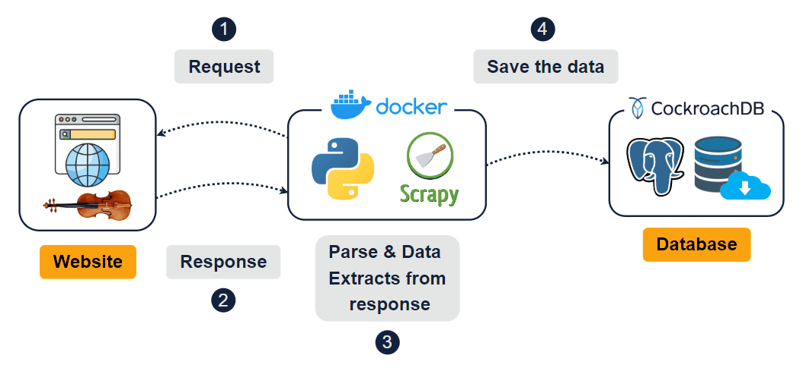
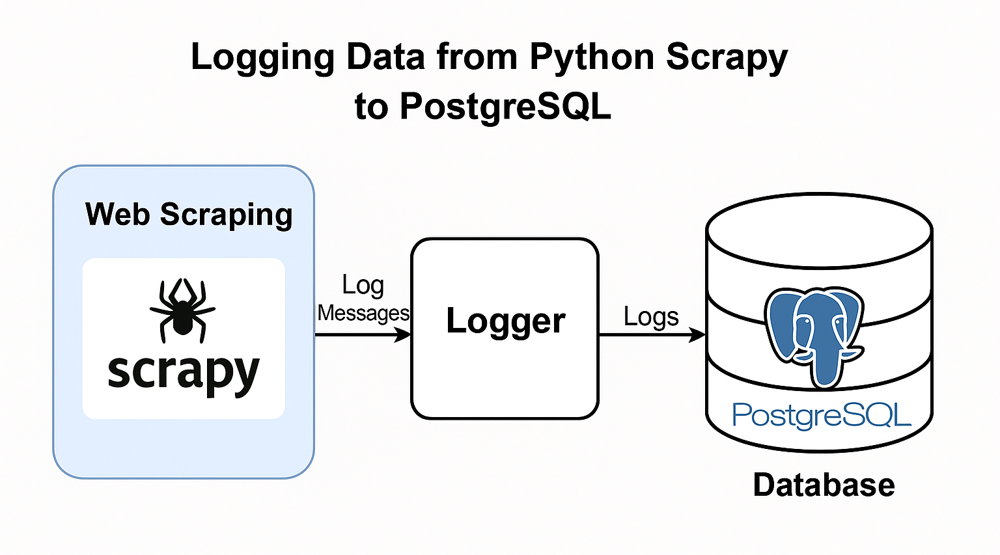
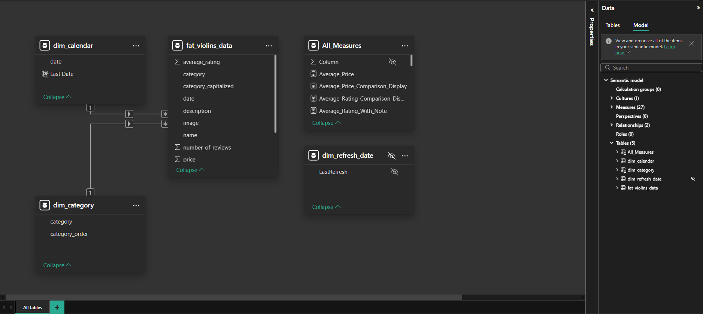

Violins Scrapy
👇 Read the project documentation below the dashboard content.
📊 Initial Insights from the Data
▪️ There is a daily stock movement of approximately 5-20 violins per day; ▪️ The price gap between professional and advanced violins is around 30 thousand dollars; ▪️ There is a large inventory of beginner violins, suggesting they are the most frequently sold items; ▪️ The site has a limited number of reviews, all related to beginner and intermediate violins, with an average rating of 5 stars; ▪️ November 2024 showed the highest average violin prices across the entire period analyzed; ▪️ Stock tends to increase at the beginning of each month, followed by a general upward trend, indicating strong inventory turnover and business growth; ▪️ There is a noticeable correlation between the number of unique violins and the average price. ▪️ In June 2025, the average violin price began to decline while the number of unique violins increased, this suggests a strategic focus on investing in cheaper violins rather than more expensive ones, which tend to have lower turnover.
🎯 Objective
To automate the extraction of product data (title, price, rating, stock, etc.) from an online violin store, aiming to build a structured dataset for analysis.
📌 Scope
The scraper navigates dynamically loaded pages, interacts with category buttons ("advanced-violins", "beginner-violins", "electric-violins"), and retrieves content from multiple sections of the website. The final output consists of cleaned and processed data, ready for use, and stored in a data warehouse.
⚠️ Initial Challenges
▪️ I had to identify the correct parsing logic at each step of the
scraping process;
▪️ Recognize and extract the specific variables for each piece of
information (e.g. violin name, price, description);
▪️ Ensure seamless navigation through all paginated content using a
dynamic loop that stops automatically at the last page;
▪️ Structure the data into a well-formed DataFrame by parsing the HTML
content accurately;
▪️ Simulate human-like behavior during the session, avoiding detection
by anti-bot systems and mimicking a real user navigating the site.
🛠️ Implemented Solution
▪️ I used Scrapy to perform the web scraping, as I
wanted to explore this powerful framework in a real case scenario. The
website's content could be extracted directly from the HTML without
relying on JavaScript rendering, which made Scrapy the ideal tool for
this project;
▪️ The data is cleaned and converted into a DataFrame using
Pandas, ensuring consistency and clarity in the final
dataset;
▪️ A second script handles the insertion of the collected data into a
PostgreSQL database, enabling further analysis or
dashboard integration;
▪️ The code runs once a day, updating every 24 hours, every morning. It was started in November 2024;
▪️ I also implemented a logger to capture the execution status of each
step in the code, storing these logs in the database for tracking and
debugging purposes.
To view the data extraction code, just click here:
 Explore the repository about this project on Github
Explore the repository about this project on Github
Check the full structure before moving on to Power BI:

Check the logging data structure:

💻 Technologies used
Web Scraping: Python, Scrapy, Pandas
Database: SQL, PostgreSQL
Infrastructure: Docker, Ubuntu Server (VPS), Crontab
Dataviz: Power BI
UX Design: Figma
Version Control: Git, GitHub
▸ 🔗 Source Description
To preserve the identity of the website, its official URL will not be disclosed.
🧩 Model
The model used was the star schema.

📝 Final Considerations
▪️ This project allowed me to learn and apply Scrapy for HTML parsing, which proved very effective depending on the web scraping context; ▪️ I'm now prepared to handle future projects using spiders, collectors, and more advanced crawling strategies; ▪️ It became clear that the processing cost for this type of operation is very low, making it significantly more economical than using Selenium, especially in cases where JavaScript rendering is not required; ▪️ Therefore, depending on the use case, Scrapy can be a more efficient and scalable solution compared to browser automation tools; ▪️ One of the potential future challenges is that, if any element on the website changes its name or structure, the code may break; however, the logging step will alert me if anything goes wrong.